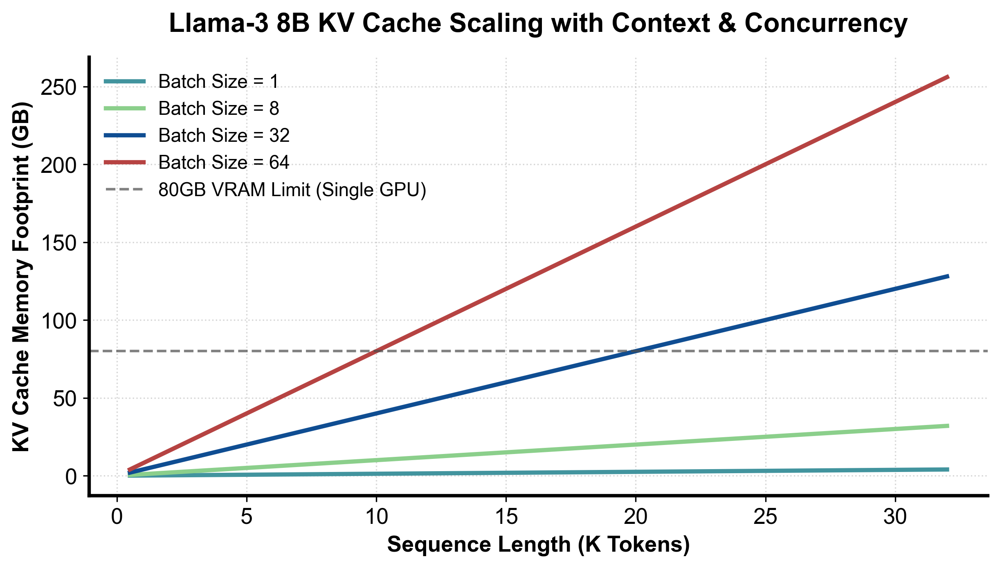

flowchart TD
ScheduleStart["进入 step() 调度周期"] --> CheckWaiting["检查等待队列 (Waiting Queue)"]
CheckWaiting --> MatchPrefix["查询 Prefix Cache 命中已有块"]
MatchPrefix --> Budget{"Token 预算与物理 Block 是否充足以容纳新请求?"}
Budget -->|充足| Promote["晋升至运行队列 (Running Queue) 触发 Prefill"]
Budget -->|不足| PreemptCheck{"Running 队列能否满足 Decode 扩张?"}
PreemptCheck -->|受阻| Preempt["抢占低优先级请求 (Preempt / Recompute)"]
PreemptCheck -->|充足| Exec["构造当前批次元数据并下发 GPU"]
第 2 课：vLLM V1 统一调度器、KVCacheManager 与 Prefix Cache
参考答案版：包含完整代码实现与问答题深度参考解析。建议先独立完成练习题后再展开核对。
本课目标与通过标准
本课产出：能逐段解释 Scheduler.schedule 如何用统一 token budget 覆盖 prefill/decode/speculation，并追踪 prefix hit、block 分配、抢占和释放的完整状态变化。
通过要求：唯一代码填空题通过全部断言；Q1～Q3 都能沿源码对象给出因果链；能指出一个正确性不变量、一个性能边界和一个需要 benchmark 才能确认的结论；总分至少 8/10。
源码版本与阅读方法
本课程使用固定 commit 的永久链接保证行号可复现，同时链接 current docs 供核对最新变化。阅读时先画调用图和状态所有权，再进入分支；不要从大文件第一行机械顺读。
源码阅读主轴：
vllm/v1/core/sched/scheduler.py::schedule：先读顶部注释，再标记 RUNNING 循环、WAITING 接纳、allocate_slots失败与_preempt_request。vllm/v1/core/kv_cache_manager.py::get_computed_blocks：理解为何只复用完整 block、全命中仍要重算最后 token。- 同文件
allocate_slots：区分 cached blocks、new computed blocks、lookahead slots 与 watermark/reservation。 vllm/v1/core/block_pool.py：追get_cached_block、get_new_blocks、cache_full_blocks和 free queue。docs/design/prefix_caching.md与hybrid_kv_cache_manager.md：把源码细节还原为设计约束。
源码快照：vLLM 8e958902eee5。
核心对象
核心操作与执行流程图解

图 2-1：Llama-3 8B 不同并发度与上下文长度下 KV Cache 显存暴涨曲线（基于 scientific-figure-making 绘制）
图 2-2：vLLM V1 统一调度器动态分发与抢占决策流程
核心心智模型
核心操作与执行流程图解
图 2-1：Llama-3 8B 不同并发度与上下文长度下 KV Cache 显存暴涨曲线（基于 scientific-figure-making 绘制）
flowchart TD
ScheduleStart["进入 step() 调度周期"] --> CheckWaiting["检查等待队列 (Waiting Queue)"]
CheckWaiting --> MatchPrefix["查询 Prefix Cache 命中已有块"]
MatchPrefix --> Budget{"Token 预算与物理 Block 是否充足以容纳新请求?"}
Budget -->|充足| Promote["晋升至运行队列 (Running Queue) 触发 Prefill"]
Budget -->|不足| PreemptCheck{"Running 队列能否满足 Decode 扩张?"}
PreemptCheck -->|受阻| Preempt["抢占低优先级请求 (Preempt / Recompute)"]
PreemptCheck -->|充足| Exec["构造当前批次元数据并下发 GPU"]
图 2-2：vLLM V1 统一调度器动态分发与抢占决策流程
1. 它是什么，解决什么问题
在 LLM 推理服务中，KV Cache 是最昂贵、最具爆发性的显存开销源头（图 2-1）。随着并发请求数与序列长度的增长，显存消耗呈陡峭的超线性爆发。传统推理系统将调度粗暴划分为“Prefill 批次”与“Decode 批次”两个互斥世界，由此引发了恶劣的调度气泡与延迟剧烈抖动：长 Prompt 的 Prefill 计算会把正在流水线生成的 Decode 请求完全阻断数十秒，导致首字延迟（TTFT）与字间生成延迟（ITL / TPOT）的双重崩溃。
vLLM V1 统一调度器（Unified Scheduler）与 KVCacheManager 彻底颠覆了这种二元割裂： - 统一 Token 预算抽象（Unified Token Budget）：调度器不再关注请求究竟处于 Prefill 还是 Decode 阶段，而是将每个请求抽象为一个简单的状态计数缺口： \[ \text{need\_tokens} = \text{total\_tokens\_with\_spec} - \text{num\_computed\_tokens} \] 系统每轮分配一个全局固定的 Token 预算（例如 token_budget = 4096），新请求的分块分段输入（Chunked Prefill）、在线请求的单步自回归（Decode）、以及投机采样（Speculative Decoding）的验证批次，统一在同一套流水线下瓜分预算； - 分层前缀缓存（Prefix Caching）：通过前缀哈希链表识别跨会话、跨请求公用的 System Prompt 或历史上下文，实现物理 Block 级别的零拷贝复用，从根源上平抑图 2-1 所示的显存陡增曲线。
2. 它如何工作
统一调度器动态分发与抢占决策时序如图 2-2 所示：
- RUNNING 队列绝对优先准则： 在每个
step()循环开始时，调度器首先且严格优先保障正在运行的 RUNNING 队列。因为正在生成的请求已经持有了大量的物理 KV Cache，若其中断会导致昂贵的显存被闲置占用。调度器优先为 RUNNING 请求分配本轮继续生成所需的 Token 预算与后继 Block。 - 前缀检索与准入接纳（图 2-2）： 若 RUNNING 队列满足后全局 Token Budget 仍有盈余，调度器按顺序扫描 WAITING 队列中的新请求：
- 提取新请求的 Prompt Tokens，在
KVCacheManager的全局哈希树中执行get_computed_blocks前缀匹配； - 若匹配到已有完整物理 Block，直接递增该 Block 的引用计数并绑定给新请求，将其初始已计算计数
num_computed_tokens直接推高至命中边界； - 检查物理显存池容量：调用
allocate_slots验证剩余物理 Block 与安全水位线（Watermark），若满足则将请求从 WAITING 晋升至 RUNNING，纳入本轮 GPU 执行批次。
- 提取新请求的 Prompt Tokens，在
- 动态抢占机制（Preemption & Self-Healing，图 2-2）： 若突发并发激增导致物理显存耗尽、无法满足 RUNNING 队列中现有请求的自回归扩张时，调度器启动抢占防护：
- 依据调度优先级（或队尾最年轻原则）选取牺牲者请求；
- 将被抢占请求从 RUNNING 踢回 WAITING 队列，调用
KVCacheManager强制释放其所占有的私有 Block 并重置其计算进度（待显存充裕时自动触发重计算恢复）； - 坚决杜绝 GPU 发生底层的 CUDA Out of Memory 致命崩溃。
3. 正确性条件与常见误区
- Prompt 全命中时的“最后 Token 强制重算”不变量： 若某个新请求的 Prompt 在 Prefix Cache 中获得了 100% 的完美全命中，
get_computed_blocks必须且只能返回prompt_length - 1，严禁返回整个 Prompt 长度！- 因果律断言：KV Cache 仅仅缓存了历史上下文的 Key 和 Value 投影张量，它从来不缓存模型最后一层的 Logits 输出！
- 为了合法地采样生成第一个新 Token，模型必须对 Prompt 的最后一个 Token 执行一次前向计算（Forward Pass）以产出对应的预测 Logits。若错误地将全部 Prompt 标为已计算，采样器将因缺失 Logits 而抛出空指针或读取未初始化内存崩溃。
- Block 物理状态的严格互斥性： 物理 Block 严禁同时处于 Free Queue（空闲池）与某个请求的活跃 Block Table 中。释放操作必须伴随着引用计数的严格原子递减，清零时方可回收入队。
- Watermark 与预留机制的本质：
scheduler_reserve_full_isl是一种准入控制防抖机制，其目的是防止“某个请求的第 1 个 Chunk 勉强能塞下、但后续 Decode 刚走两步就因显存不足被反复抢占踢回”的系统级惊群抖动，而非真正扩充了物理显存容量。
4. 性能与工程取舍
- Block Size 粒度的系统级博弈：
- 较小块（Block Size = 8 或 16）：显存碎片率低，Prefix Cache 匹配粒度极其精细，适合多轮短对话；但缺点是 Block Table 长度翻倍，Kernel 寻址开销增加，且高并发下 CPU 端哈希更新成为新瓶颈；
- 较大块（Block Size = 32 或 64）：GPU 显存连续访存带宽利用率极高，符合 Tensor Core 访存合并要求；缺点是尾部内碎片比例显著升高，长 Prompt 复用率下降。
- Chunked Prefill 的平滑效果： 通过将长达数万 Token 的超长 Prompt 切分为若干个 512 或 1024 Token 的微块（Chunk），将单一请求的巨型 Prefill 均匀分摊到多个 step 中，与短 Decode 请求无缝交织执行。这不仅彻底消除了 ITL（字间延迟）的断崖式尖刺，还使得 GPU SM 计算核心与显存带宽始终维持在饱和高吞吐区间。
具体演示：统一 Token 预算分配与无阶段分支调度
设当前配置全局统一预算 token_budget = 8。调度器待处理请求队列如下： - 请求 A（处于 running 状态）：已计算 computed = 6，包含投机预测的总目标 total_with_spec = 10。缺口 \(\text{need}_A = 10 - 6 = 4\)； - 请求 B（处于 waiting 状态）：刚到达的新请求，computed = 0，Prompt 总长 total_with_spec = 7。缺口 \(\text{need}_B = 7 - 0 = 7\)。
统一调度器步进执行： 1. 优先处理 RUNNING 请求 A： - 提取需求：\(\text{need}_A = 4\)； - 分配预算：\(\text{take}_A = \min(4, 8) = 4\)； - 扣减全局预算：token_budget 从 8 降为 \(8 - 4 = 4\)； - 请求 A 被计划执行 4 个 Token（这可能代表 1 步 Decode 加上 3 个 Speculative Verification Tokens）。 2. 随后处理 WAITING 请求 B： - 提取需求：\(\text{need}_B = 7\)； - 分配预算：当前剩余预算为 4，因此 \(\text{take}_B = \min(7, 4) = 4\)； - 扣减全局预算：token_budget 降为 0，调度循环退出； - 请求 B 被计划执行 4 个 Token（这正是典型的分块 Chunked Prefill）。
最终输出调度计划为：{"decode_or_spec": 4, "prefill": 4}，剩余预算为 0。整个算法完全不依赖任何 if status == "prefill" 的硬编码条件分支，以统一的代数数学模型自洽表达了所有异构推理形态。
实践任务：唯一代码填空题
实现统一 token budget 的教学版计划器。RUNNING 请求优先于 WAITING；每个请求按 total_with_spec-computed 领取预算，不引入 prefill/decode 分支。
只能修改 TODO/______ 位置，不得删除断言或放宽通过条件。
Code
def unified_token_plan(requests, token_budget):
if token_budget < 0:
raise ValueError("negative token budget")
if any(r["computed"] < 0 or r["total_with_spec"] < r["computed"] for r in requests):
raise ValueError("invalid request counters")
# Scheduler 源码先处理 running，再处理 waiting；同组保持输入次序。
ordered = [r for r in requests if r["status"] == "running"] + [
r for r in requests if r["status"] == "waiting"
]
plan = {}
for request in ordered:
if token_budget == 0:
break
# TODO：只根据统一 token 缺口分配，不判断阶段名称。
need = ______
take = ______
if take:
plan[request["id"]] = take
token_budget -= take
return plan, token_budget
reqs = [
{"id": "prefill", "status": "waiting", "computed": 0, "total_with_spec": 7},
{"id": "decode_or_spec", "status": "running", "computed": 6, "total_with_spec": 10},
]
assert unified_token_plan(reqs, 8) == ({"decode_or_spec": 4, "prefill": 4}, 0)
assert unified_token_plan(reqs, 20) == ({"decode_or_spec": 4, "prefill": 7}, 9)检查方法
运行断言；增加一个 computed==total_with_spec 的请求，确认它不消耗预算，再解释真实源码还需通过哪些 KV/encoder 条件。
Q1
为什么统一 token budget 能同时表达 chunked prefill、decode 与 speculative verification？它没有消除什么复杂度？
你的答案：
Q2
Prefix cache 全命中 prompt 时，为什么源码仍限制最大命中到 prompt_length-1？
你的答案：
Q3
allocate_slots 失败后立即把 max_num_seqs 调大是否合理？请给出源码级因果链。
你的答案：
评分规则
- 代码 4 分：主路径 2 分、边界条件 1 分、能映射回源码对象 1 分；
- Q1～Q3 各 2 分：必须包含对象、状态变化、正确性或成本链；
- 一票否决：把论文峰值写成普遍生产结论；把源码支持写成所有模型/硬件可用；混淆算法正确性与性能；只背类名而说不清状态所有权。